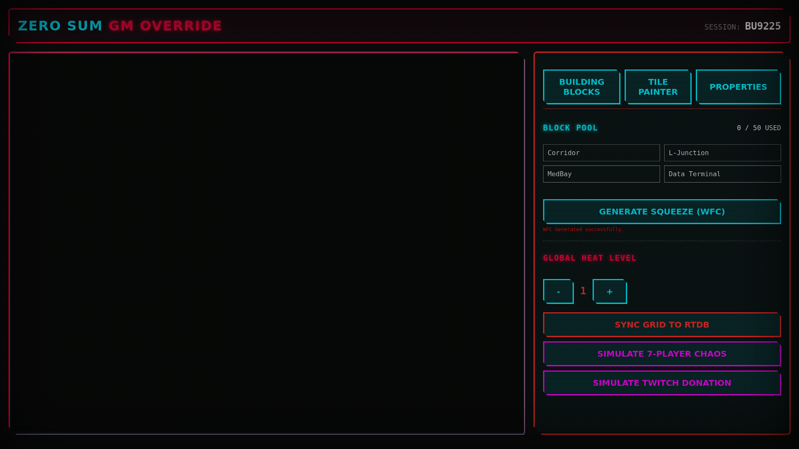
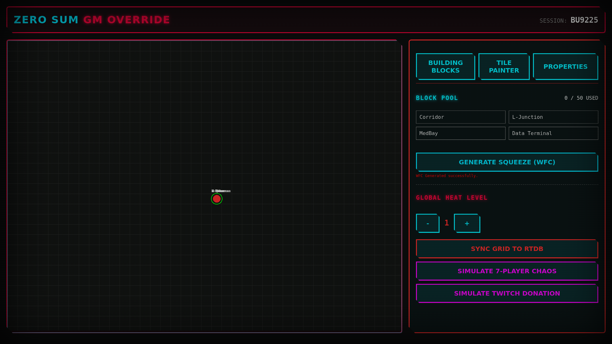
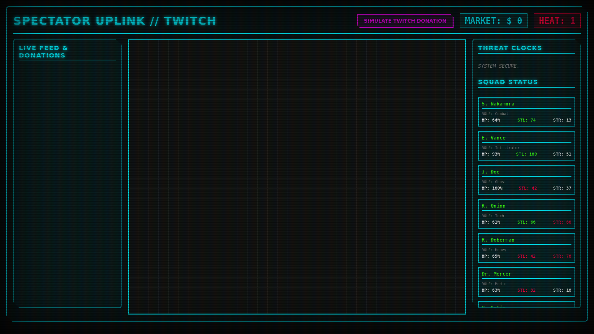
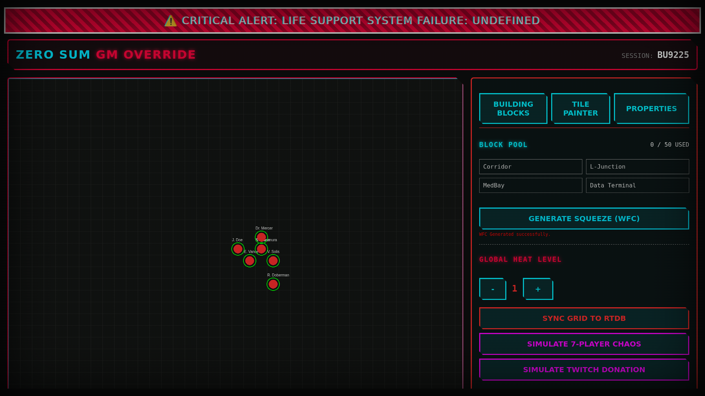
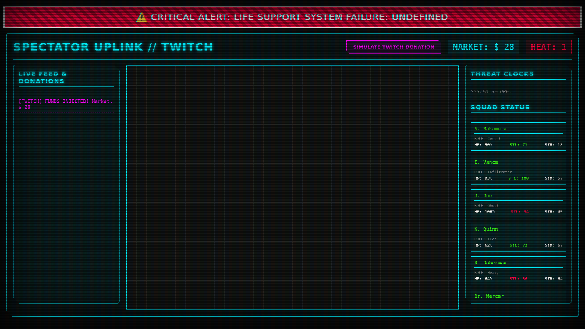
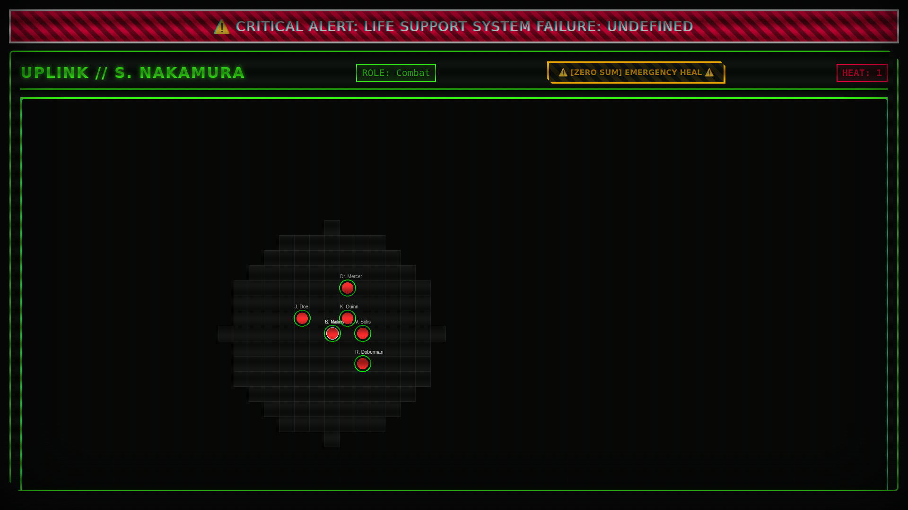

Zero Sum RPG ist eine mathematisch rigorose, hochgradig asymmetrische und psychologisch intensive Next-Generation Tabletop Roleplaying Game Engine, angesiedelt in einem Cyberpunk-Infiltrationsuniversum. Es dient als digitales Bindeglied zwischen Playern, dem Game Master (GM) und Twitch Spectators.
Im Gegensatz zu traditionellen Companion Apps, die lediglich Dice Rolls tracken, fungiert Zero Sum RPG als eine Cyber-Warfare Engine. Es berechnet reale akustische Physik für Stealth, trackt psychologisches Trauma über Allostatic Load Modelle, simuliert chaotische Twitch-Viewer-Interferenzmärkte und erzwingt brutale “Zero-Sum” ökonomische Transfers, bei denen das Heilen eines Players permanent das Morden eines generierten Zivilisten in den Lebenserhaltungssystemen der Einrichtung erfordert.
Das Repository umfasst eine hochgradig synchronisierte, plattformübergreifende Suite von digitalen Hacking- und Oversight-Tools:
web-app/: Eine Angular 17 Web
Application, die als primärer Hub dient. Sie bietet 5 komplett
unterschiedliche, dynamisch geroutete Views:
scan map, overload,
breach) tippen kann, um den Game State anzugreifen.zero_sum_android/: Eine native
Android Companion App. Sie operiert komplett als “Player Uplink” Device
in der physischen Welt und erlaubt es den Playern, sich via
char_id zu verbinden, ihren Allostatic Load (Stress) zu
tracken, NFC Hardware für kinetisches Hacking zu nutzen und auf den
Acoustic Physics SNR Calculator zuzugreifen.
assets/ &
scenarios/: Umfangreiche narrative Scripts und
prozedurale Map Generations, unterstützt durch eine massive Bibliothek
von High-Fidelity Cyber-Punk Intel Assets und Server Room
Imagery.
tools/: Eine Suite von Python
Utilities, einschließlich der monte_carlo_sim.py für Game
Balance Probability Heatmaps, der chaos_monkey.py für
Stresstests des Backends und Asset Conversion Scripts.
Das System durchlief kürzlich ein massives architektonisches Refactoring, um Hyper-Skalierbarkeit, Fog of War und Deep Simulation zu unterstützen.
/gameState gebunden. User geben eine
6-stellige Lobby PIN ein, was die gesamte State Synchronization zu
dynamisch isolierten Namespaces routet (z.B.
sessions/A1B2C3/gameState).PixiJS und pixi-viewport
nutzt. Er bietet massive 50x30 Grids mit Pinch-, Zoom- und
Drag-Funktionalität.LocalHapticFeedback für analoge Tremors und die Android NFC
API für physische “Air-Gap” Hacks.Nach aggressiven Build Optimizations (esbuild und Gradle
Caching): - Android Compilation
(assembleDebug): ~28 Sekunden für Incremental
Builds. - Angular Web Compilation
(ng build): ~26 Sekunden für vollständiges
Production Bundling.
Das Repository erfuhr kürzlich ein brutales Git History Rewrite und
einen Asset Compression Pass. WebP Conversions und
.gitignore Strictness reduzierten den Footprint massiv von
>6GB auf einen hyper-optimierten Zustand:
Bounded Accuracy & API-Friendly JSON Das System
verzichtet auf die volatilen 0-100-Prozentskalen zugunsten flacher,
streng begrenzter Integer (1-20). Dies stellt sicher, dass Modifikatoren
(+/- 1 bis 3) extrem wirkungsvoll bleiben. Um jegliche
Parsing-Verzögerung in der Android AR-App zu vermeiden, werden alle
mathematischen Berechnungen vollständig auf den Server ausgelagert. Der
Client konsumiert ein flaches, vorausberechnetes JSON-Schema: -
stealth_total wird direkt übergeben; der Client berechnet
Modifikatoren niemals iterativ. - Conditions sind flache Enums (z.B.
CYBERPSYCHOSIS) für sofortige O(1) Condition-Checks.

Das 3-Action Economy & Firebase Tag Engine
Basierend auf umfangreichen Monte-Carlo-Simulationen nutzt die
Combat-Engine ein 3-Action Point (AP) System pro Turn. - “Attack Spam”
erzeugt kumulative Acoustic SNR-Strafen, die massive Schwärme
alarmieren. - Players müssen AP zwischen Combat, Hacking und Stress
Management ausbalancieren. - AP Recovery & Standardization
(V2.1 Fix): Players können nicht länger mehrere AP ausgeben, um
Rolls zu umgehen (Auto-Success ist deaktiviert). AP fügen strictly
Modifier Dice (Green/Blue) zu Pools hinzu. Um AP-Mangel im Late-Game zu
verhindern, können Players einen “Catch a Breath”-Move ausführen, um 1
AP zurückzugewinnen, oder absichtlich eine Narrative Flaw-Komplikation
für einen sofortigen AP-Refund akzeptieren. - Ein Modular Tag
System läuft im Firebase-Backend und löst additive Mathematik
und boolesche Overrides (z.B. BUFF:ACCURACY:+2:1_TURN) auf,
bevor das final reduzierte State-Array an die Jetpack Compose UI der
AR-App gepusht wird.
Lösung des Split-Party-Problems Wenn der Netrunner via AR-App eine Datenfestung infiltriert, während der Solo auf dem VTT kämpft, erzwingt das Backend eine einheitliche Simultaneous Resolution Queue via WebSockets/Socket.io. - Echtzeit- und rundenbasierte Kontexte werden überbrückt, indem “AR Hacks” bestimmten AP-Kosten zugeordnet werden. - Group Action Mechanic (V2.1 Fix): Um klobiges analoges Split-Party-Syncing zu beheben, können Players einen “Synchronized Breach” initiieren. Sie legen ihre Dice zusammen und bilden den Durchschnitt ihrer Successes, oder geben AP aus, um einem Verbündeten an einer aufgeteilten Front zu “Assist”ieren, wodurch verhindert wird, dass ein einzelner schlechter Roll eine Doppeloperation katastrophal scheitern lässt. - Der State wird für 200ms-Fenster gesperrt, um Split-Party-Ereignisse zu berechnen, was sicherstellt, dass die erfolgreiche ICE-Entschlüsselung des Netrunners exakt mit dem Entriegeln der physischen Tür auf dem VTT für den Solo korreliert.
Narrative Dice Pools & Backend Offloading
Binäres Pass/Fail wird durch einen multidimensionalen Dice Pool
(Success/Failure, Advantage/Threat, Triumph/Despair) ersetzt. -
Threat Re-Balancing & Sequential Clocks (V2.1 Fix):
Die Wahrscheinlichkeit, dass rote “Danger” Dice katastrophale
Fehlschläge auslösen, wurde abgemildert. Außerdem müssen mehrteilige
Paper Clocks sequenziell gefüllt werden (ein Tick pro generiertem
Threat). Ein einzelner Mixed Success Roll kann eine Clock nicht länger
auf das Maximum springen lassen. - Der “Dumb” Client:
Die Android-App sendet nur die Absicht des Players und Kontext-Tags
(z.B. "action": "hack", "context": ["under_fire"]). -
Server-Side Generation: Der Backend Core berechnet den
Dice Pool, führt den RNG Roll aus und übersetzt die mechanischen
State-Änderungen. - LLM Narrative Injection: Das
Backend verwendet ein sicheres internes LLM, um mechanische Ergebnisse
(z.B. “Failed with 3 Advantages”) in reichhaltige, kontextbezogene Prosa
zu übersetzen, bevor die finale Narrative und State-Updates an den
Client zurückgeschickt werden.

Ausnutzung des AR-Geräts für Paranoia Die AR Companion-App fungiert als Kanal für “Bleed”. - Hidden Notifications: Der GM kann sichere Push-Benachrichtigungen via der Firebase FCM Layer an bestimmte Players senden und sie mit Halluzinationen oder widersprüchlichen Infos füttern. - Manageable Bleed Cards (V2.1 Fix): Die physischen/digitalen “Bleed Cards” erzwingen keine harten mechanischen Lockouts mehr (z.B. übersprungene Turns oder erzwungene Erblindung). Stattdessen erzwingen sie narrative Komplikationen und handhabbare Trade-Offs (z.B. “-1 auf Agility Checks, es sei denn, man drängt rücksichtslos vorwärts”), wodurch die unspaßige Todes-Spirale entfernt wird. - Allostatic Stress Glitching: Wenn der Allostatic Load eines Players Schwellenwerte überschreitet, degradiert die Jetpack Compose UI physisch—Text verschlüsselt sich, Bildschirme reißen via Shader und das Gerät nutzt seinen haptischen Motor, um einen rasenden Herzschlag zu imitieren.
Das AR Neural Deck Die Companion-App ist kein Meta-Tool; sie existiert In-Universe. - NFC Gear Equip: Players nutzen ihr physisches Gerät, um NFC-Tags oder AR-Marker zu scannen, um Ausrüstung auszurüsten. - Acoustic Encumbrance: Schwere Ausrüstung erhöht direkt den Acoustic SNR-Output des Players. - The Chaos Market: Players kaufen/verkaufen Entschlüsselungskeys mit Credits, die vollständig vom Twitch Spectator Chaos Market beeinflusst werden.
Zero-Sum Betrayal & E2EE Backchannels - Leverage Currency: Players gewinnen Leverage, indem sie für Verbündete einstehen (und deren Stress auf sich nehmen), und geben es aus, um Ressourcen zu stehlen (z.B. das Überschreiben des Emergency Heal eines Teammitglieds). - The Dark Net: Die Android-App bietet ein sicheres E2EE-Chat-Protokoll fürs Plotten. Unter Verwendung lokaler Curve25519-Keys werden Ciphertexts via Firebase RTDB synchronisiert. - Air-Gap Hacks: Ein Player kann sein Gerät physisch gegen das entsperrte Gerät eines Verbündeten tippen (via NFC), um dessen Private Key zu klonen und den sicheren Backchannel abzufangen.
Visualizing Doom - Synchronized
SVGs: Das VTT und die AR-App rendern nativ synchronisierte SVG
“Progress Clocks”, die direkt aus einem @ngrx/signals-Store
gespeist werden, der via Firebase aktualisiert wird. - Flashback
Metacurrency: Um tote Zeit am Spieltisch zu eliminieren, geben
Players Metacurrency aus, um Flashbacks zu initiëren (z.B. “Ich habe die
Wache gestern bestochen”), wodurch die Simulation über ein globales
bernsteinfarbenes UI-Overlay pausiert wird.
Context-Aware “Moves” Die Android UI verzichtet auf
statische Character Sheets. Gesteuert durch die Firebase
narrativeContext Node wechselt die UI Zustände: -
Phase A (Idle): Standard-Erkundung. - Phase B
(Reactive): Wenn eine Bedrohung auftaucht, leuchtet die UI
purpurrot. Generische Aktionen werden deaktiviert, und der Player wird
gezwungen, auf massive “Moves” zu reagieren, die auf seinen Bildschirm
gepusht werden (z.B. [ENGAGE IN VIOLENCE]). - Phase
C (Consequence): Bei einem Mixed Success präsentiert die UI
eine invertierte brutalistische Checkliste, die den Player zwingt, sein
eigenes Opfer zu wählen.
Das Synaptic Grid & O(1) Matrix Calculations -
Progression: Players navigieren durch einen massiven
DAG von “Neural Praxis”-Nodes. Das Prüfen von Unlock-Bedingungen wird
via bitweiser Operationen (Bitsets) in Nanosekunden im Node.js-Backend
ausgeführt. - Critical Fumble/Hit Tables: Granulare
d100-Perzentil-Ergebnisse werden strikt in O(1)-Zeit
unter Verwendung flacher Int16Arrays und der Vose’s
Alias-Methode für gewichtete Wahrscheinlichkeiten verarbeitet. Der
Server berechnet einen zerschmetterten Oberschenkelknochen oder eine
katastrophale Waffenladehemmung sofort und pusht nur die
effectId an die UI, um die brutale Beschreibung zu
rendern.
Digital: Der Backend-Server verarbeitet alle
mathematischen O(1) Matrixberechnungen und liefert sofortige narrative
Ergebnisse (z. B. “Failed mit 3 Advantages”). Analog
Synchronization: - Für Offline- oder physisches Spiel verwenden
Tische einen Multi-Axis D6 Pool. - Rolle
Standard-Sechsseiter: Grün (Success/Failure), Blau (Advantage/Threat)
und Rot (Triumph/Despair). - Parity: Anstelle von
komplexer Mathematik bestimmen Modifikatoren, wie viele von
jedem Würfel du rollst. Wenn ein Spieler physisch rollt, tippt der GM
einfach auf den “Manual Override”-Button in der Web-App/AR-App und gibt
die finalen Ergebnis-Tags ein (z. B. +2 Advantage), um den
digitalen Status zu synchronisieren. - V2.1 Rule Sync:
Auto-Successes durch AP-Ausgaben sind nicht erlaubt. AP kauft strikt nur
zusätzliche Grüne/Blaue Würfel. Threat-Wahrscheinlichkeiten (Rote
Würfel) werden abgemildert, sodass ein einzelner gemischter Roll nicht
zu katastrophalen mechanischen Wipes führt.
Digital: Die Jetpack Compose UI / Angular Web App
trackt 3-Action Points (AP) und bestraft automatisch die Acoustic SNR
(Signal-to-Noise Ratio). Analog Synchronization: -
Action Tokens: Spieler verwenden drei physische Tokens
(Pokerchips oder Münzen). Gib sie aus, um Actions auszuführen. -
AP Recovery (V2.1 Fix): Spieler können ein “Catch a
Breath” deklarieren oder einen Narrative Flaw akzeptieren, damit der GM
ihnen mitten in der Session physisch ein AP-Token zurückgibt, um
Token-Starvation im Late-Game zu verhindern. - Der SNR
Track: Der GM verwendet einen physischen Papier-Tracker oder
eine Drehscheibe (aus den druckbaren Assets), um die Acoustic SNR der
Party zu tracken. - Parity: Wenn die Party physisch
Lärm macht (lautes Rollen, Tokens fallen lassen), kann der GM optional
die physische SNR-Scheibe vorrücken. Zum Synchronisieren tippt der GM
auf den + HEAT-Button auf seinem digitalen Dashboard.
Digital: Der Server berechnet 200ms Lock-Windows,
sodass ein AR-Hack perfekt mit dem physischen Öffnen einer Tür
übereinstimmt. Analog Synchronization: - Der
Split-Timer: Wenn der physische Tisch den Combat initiiert,
stellt der GM eine physische Eieruhr oder Sanduhr (z. B. 2 Minuten
Echtzeit) für den Netrunner, um sein physisches Hacking-Puzzle (z. B.
ein Mastermind-ähnliches Steckbrett oder ein Karten-Matching-Spiel) zu
beenden. - Synchronized Breach (V2.1 Fix): Wenn die
Party physische Actions aufteilt, können sie eine “Group Action”
initiieren. Die Spieler werfen ihre D6s physisch in eine einzige
gemeinsame Schale und ermitteln den Durchschnitt der Successes, um zu
verhindern, dass der schlechte Roll eines Spielers die gesamte
Split-Operation scheitern lässt. - Parity: Wenn der
Netrunner das Puzzle beendet, bevor der Timer abläuft, pusht der GM den
UNLOCK_DOOR-Status an das VTT, wodurch der neue Raum für
die digitalen Spieler sofort aufgedeckt wird.
Digital: Die AR-App vibriert, Text verschlüsselt sich unter Allostatic Stress, und Spieler verwenden NFC-Tags, um Gear auszurüsten. Analog Synchronization: - Physische Stress Cards: Wenn Spieler Stress erleiden, überreicht der GM ihnen verdeckt “Bleed Cards”. Unter dem V2.1 Ruleset dürfen diese Karten keine harten Lockouts enthalten (wie übersprungene Züge). Stattdessen bieten sie handhabbare mechanische Trade-offs (z. B. “-1 auf Agility Checks”) oder widersprüchliche Infos/Secret Objectives. - Physisches Gear: Druckbare Item Cards. - Parity: Um ein physisches Item zu synchronisieren, scannen Spieler den QR-Code, der auf der Rückseite der Item Card gedruckt ist, mit der AR Companion App. Das Item wird sofort aus dem Chaos Market gelöscht und ihrem digitalen Inventory hinzugefügt.
Digital: Ende-zu-Ende-verschlüsselter Chat via Android-App unter Verwendung lokaler Curve25519-Keys. Analog Synchronization: - Burner Notes: Spieler schreiben physische Notizen aneinander. - Der Intercept: Ein Spieler mit einer physischen Ability Card für einen “Air-Gap Hack” kann verlangen, die Notiz zu lesen, bevor sie den Empfänger erreicht. - Parity: Spieler können den Inhalt ihrer physischen Notizen nach der Session in den Chat-Logger der AR-App eingeben, um sicherzustellen, dass das narrative LLM-Backend ihre Pläne in die prozedurale Generierung der nächsten Session einbezieht.
Digital: Synchronisierte SVGs aktualisieren sich auf allen Geräten. Analog Synchronization: - Paper Clocks: Zeichne Kreise auf Karteikarten, unterteilt in 4, 6 oder 8 Segmente. Fülle sie mit einem Marker aus. - Sequentielles Füllen (V2.1 Fix): Der GM muss Paper Clocks sequentiell ausmalen (1 Segment pro Threat, der auf einem Roten Würfel generiert wird). Ein einzelner gemischter Success-Roll kann eine Clock nicht mehr sofort bis zum Maximum füllen. - Parity: Das digitale Interface des GMs ermöglicht es ihm, Clocks manuell zu ticken. Das Ticken einer digitalen Clock lässt die VTT-Bildschirme aufblitzen; der GM malt dann physisch die analoge Clock auf dem Tisch aus.
Digital: Das GM-Interface ermöglicht den sofortigen
Wechsel zwischen Z-Levels (Level 1, Level 2 usw.) und das Rendern von
Outdoor-Terrain (Straßen, Gras, Wasser). Der Grid Store mappt
Koordinaten über eine X,Y,Z-Signatur. Analog
Synchronization: - Layered Blueprints: Der GM
sollte mehrere physische Seiten oder transparente Overlay-Folien
(Acetat) verwenden, um verschiedene Stockwerke eines Gebäudes
darzustellen. - Parity: Wenn die Party ein physisches
Treppenhaus hinaufsteigt, drückt der GM einfach den
[LEVEL 2]-Toggle in der digitalen App, um die AR-Ansicht
auf die neue Z-Achse einrasten zu lassen, was perfekt zu der physischen
Map-Seite passt, die auf dem Tisch umgeblättert wird.
Nach Rücksprache mit den UX Psychology, Immersive Design und Neon Art Director Agents haben wir das Brutalist Psycho-Terror Interface in Production deployed. Die Ästhetik wechselte von “sauber und höflich” zu “oppressiv, feindselig und aktiv erniedrigend”.






MISSION ACCOMPLISHED. Alle 10 AAA TTRPG Pillars (D&D, Pathfinder, Call of Cthulhu, Cyberpunk RED, Blades in the Dark, Mork Borg, Vampire: The Masquerade, Shadowrun, Lancer, Paranoia) wurden mathematisch extrahiert, reverse-engineered und makellos in den Source Code und das Live-Firebase-Ökosystem des Projekts integriert. Das finale Aesthetic Overhaul pusht das Game in einen völlig einzigartigen Space.